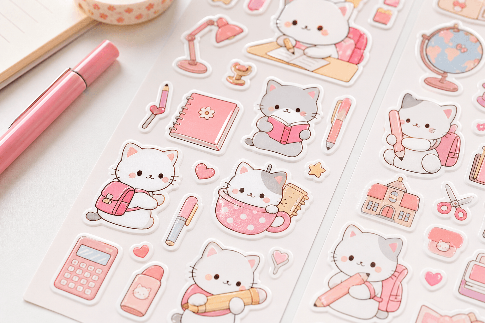

Trang trí sổ tay bằng sticker là cách nhanh nhất để biến quyển vở trơn thành planner cá nhân — không cần vẽ giỏi, không tốn nhiều tiền. Bài viết hướng dẫn 7 bước decor sổ tay từ A–Z: chọn nhãn dán, layout trang, phối màu pastel, mẹo dán gọn và lỗi thường gặp — phù hợp học sinh, sinh viên đang tìm sticker trang trí sổ tay và nhãn dán học tập.
1. Vì sao nên trang trí sổ tay bằng sticker?
Xu hướng bullet journal và study aesthetic trên TikTok Việt Nam khiến sổ tay decor trở thành “must-have” của học sinh Gen Z. Lợi ích cụ thể:
- Tiết kiệm thời gian — không cần vẽ tay từng chi tiết, chỉ cần dán nhãn dán.
- Cá nhân hóa — mỗi trang phản ánh gu riêng, mood học tập.
- Tổ chức tốt hơn — label, icon checklist giúp phân loại nội dung.
- Tạo động lực ghi chép — sổ đẹp khiến bạn muốn mở ra viết hơn.
2. Chuẩn bị trước khi decor sổ tay
A5 hoặc B6, giấy phẳng, không ẩm.
Cắt sẵn, bóc nhanh, viền đẹp.
Phân loại, ghi tiêu đề trang.
Ghi chép và đánh dấu.
Canh layout, kẻ khung.
Phác layout trước khi dán.
3. 7 bước trang trí sổ tay bằng sticker
- Chọn 1 chủ đề: Mèo Kem, pastel, học tập hoặc theo mùa (Tết, tựu trường).
- Phối 2–3 màu: Hồng–kem–trắng là combo an toàn, dễ “ăn ảnh”.
- Phác layout nhẹ: Chia trang: tiêu đề → nội dung → sticker trang trí góc.
- Dán theo cụm: 3–5 nhãn dán cùng khu vực, tránh dán rải rác.
- Dùng sticker chức năng: Label phân loại, icon deadline, bookmark mini.
- Cân bằng chữ & hình: Để khoảng trống để ghi chép thoải mái.
- Chụp & chia sẻ: Góc sáng tự nhiên — phù hợp đăng TikTok study vlog.

4. Layout trang planner phổ biến
Mỗi loại trang có cách bố trí sticker khác nhau:
| Loại trang | Bố cục gợi ý | Sticker phù hợp |
|---|---|---|
| Weekly spread | 7 cột (thứ 2–CN), tiêu đề tuần trên cùng | Label ngày, icon thời tiết mini |
| To-do list | Checkbox + dòng ghi chú, sticker góc phải | Icon tick, sao, cờ mốc |
| Mood tracker | Lưới 30 ô, mỗi ô 1 sticker mood | Emoji, biểu tượng cảm xúc cute |
| Cover / bìa | 1 sticker lớn trung tâm + 2–3 mini xung quanh | Frame, quote, nhân vật Mèo Kem |

5. Phối màu & chọn sticker cho sổ tay
Combo màu an toàn (dễ áp dụng)
- Hồng–kem–trắng — signature KemStore (#ee5f6d), phổ biến nhất.
- Xanh mint–trắng–be — tươi mát, hợp mùa hè.
- Vàng nhạt–trắng–nâu — ấm áp, vintage nhẹ.
Loại sticker nên có trong bộ cơ bản
| Loại | Số lượng gợi ý | Công dụng |
|---|---|---|
| Label / nhãn dán | 10–15 cái | Tiêu đề, phân loại |
| Icon mini | 15–20 cái | Checklist, mood, decor |
| Sticker lớn (hero) | 3–5 cái | Bìa, điểm nhấn trang |
| Frame / viền | 5–8 cái | Khung tiêu đề, quote |
6. Mẹo dán sticker sổ tay không rối mắt
- Ưu tiên sticker die-cut (cắt sẵn) — bóc nhanh, viền đẹp.
- Tránh trộn quá nhiều phong cách (Y2K + vintage + cute) trên cùng 1 trang.
- Dùng quy tắc 60/40: 60% không gian ghi chép, 40% decor.
- Mua combo sticker + sổ tay cùng bộ để đồng bộ màu, tiết kiệm hơn mua lẻ.
- Chụp ảnh sổ decor dưới ánh sáng tự nhiên — màu sticker hiển thị chuẩn hơn.

7. Lỗi thường gặp khi decor sổ tay bằng sticker
- Dán quá dày — trang đẹp nhưng không còn chỗ ghi. Giữ 40% decor tối đa.
- Không có chủ đề — mỗi trang một style, sổ nhìn lộn xộn.
- Dán vội, không canh — sticker lệch, khó sửa. Phác bút chì trước.
- Sticker chất lượng kém — lem mực, bong góc sau vài tuần.
- Quên chức năng — chỉ decor mà không dùng label/icon tổ chức nội dung.
8. Câu hỏi thường gặp (FAQ)
Trang trí sổ tay bằng sticker cần những gì?
Cần sổ tay hoặc planner, sticker die-cut hoặc nhãn dán, bút gel, bút highlight và thước kẻ. Chọn 1 chủ đề và 2–3 màu chủ đạo để đồng bộ.
Dán sticker sổ tay có bị nhăn không?
Miết từ giữa ra ngoài, tránh bọt khí. Dán trên giấy phẳng, khô. Sticker chất lượng tốt ít bị nhăn hoặc bong góc — nên chọn die-cut từ shop uy tín.
Sticker nào hợp bullet journal?
Nhãn dán label, icon checklist, frame tiêu đề và sticker mini theo chủ đề. Ưu tiên die-cut nhỏ gọn, dễ bóc dán. Xem thêm bullet journal cho học sinh.
Mua sticker trang trí sổ tay ở đâu?
KemStore.vn có 500+ mẫu sticker Mèo Kem và combo sổ + sticker. TikTok Shop giá tốt, Shopee giao toàn quốc, voucher 10% trên web.
Kết luận
Cách trang trí sổ tay bằng sticker không khó — chỉ cần 7 bước, 1 chủ đề màu và vài sheet nhãn dán chất lượng. Bắt đầu từ layout đơn giản (to-do hoặc weekly), áp dụng quy tắc 60/40, và thêm chút Mèo Kem để sổ tay vừa đẹp vừa hữu ích. Kết hợp với scrapbook study aesthetic để nâng tầm decor học tập!